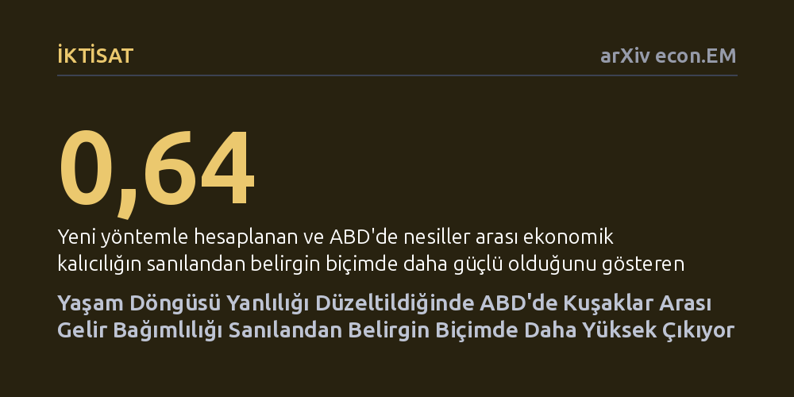

IKTISAT · arXiv econ.EM · 2026-09-08
Araştırma, yaşam döngüsü gelir sapmalarını makine öğrenmesiyle düzelterek ABD'de ebeveynler ile çocukları arasındaki gelir aktarımını yeniden hesaplıyor. Sonuçlar, önceki yöntemlerin 0,41-0,54 bulduğu gelir esnekliğinin aslında ortalama 0,64 olduğunu ve kuşaklar arası gelir kalıcılığının sanılandan belirgin biçimde daha yüksek seyrettiğini gösteriyor.
Fırsat eşitliği ve sınıflar arası geçişkenlik varsayımlarının aksine, ailenin ekonomik durumunun çocukların gelecekteki kazancını belirlemedeki etkisinin kabul edilenden çok daha güçlü olduğunu ortaya koyuyor.

Bir toplumda çocukların yetişkinlikte elde ettiği gelirin ne kadarının kendi çabalarına, ne kadarının ise ebeveynlerinin ekonomik gücüne bağlı olduğu sorusu, fırsat eşitliği tartışmalarının merkezinde yer alır. İktisatçılar bu ilişkiyi 'kuşaklar arası gelir esnekliği' adı verilen bir katsayıyla ölçer. Ancak bir bireyin tüm çalışma hayatı boyunca elde ettiği ekonomik refahı baştan sona gözlemlemek pratikte neredeyse imkansızdır; araştırmacılar çoğunlukla yalnızca belirli yaşlarda çekilmiş anlık gelir fotoğraflarına erişebilir.
Bu veri kısıtı nedeniyle yaygın akademik uygulama, kişilerin birkaç yıllık gelir ortalamalarını alarak genel bir ömür boyu refah tahmini yapmaktır. Ne var ki bireylerin kazançları kariyerlerinin başında, ortasında ve emeklilik öncesinde büyük dalgalanmalar gösterir. Bu durum, 'yaşam döngüsü yanlılığı' olarak adlandırılan sistematik bir ölçüm hatası doğurur; çalışmaların güvenilirliğini sarstığı gibi farklı ülkelerin ve dönemlerin birbiriyle sağlıklı karşılaştırılmasını da engeller.
Yazar, yaşam döngüsü kaynaklı bu sapmayı ortadan kaldırmak amacıyla eksik veri kuramına dayanan yeni bir ekonometrik çerçeve geliştiriyor. Bireylerin mevcut gelir verileri ile eğitim ve demografik özellikler gibi gözlemlenebilir niteliklerini bir araya getiren bu yaklaşım, kişilerin tüm ömürlük gelir profillerini daha sağlıklı biçimde yakalamayı hedefliyor.
Yöntem, parametrik olmayan tanımlama tekniklerini Neyman-ortogonal momentlerle birleştirerek yanlılığı azaltılmış makine öğrenmesi tahmincileri inşa ediyor. Bu matematiksel kurgu, verilerin gözlemlenebilir özellikler ışığında rastlantısal olarak eksik olduğu varsayımı altında, makine öğrenmesi modellerinin kendi iç tahmin hatalarının ana sonuca yansımasını önleyerek güvenilir bir istatistiksel zemin sunuyor.
Geliştirilen yöntem, ABD'nin en köklü mikro veri kaynaklarından olan Gelir Dinamikleri Panel Çalışması (PSID) verilerine ve 1954 ile 1977 yılları arasında doğan kuşaklara 10 yıllık kayan zaman dilimleriyle uygulandı. Mevcut geleneksel yaklaşımlar aynı veri setinde kuşaklar arası gelir esnekliğini 0,41 ile 0,54 arasında hesaplarken, yeni yöntem esnekliğin 0,60 ile 0,70 aralığına yerleştiğini ve ortalama 0,64 olduğunu gösterdi.
Bu belirgin artış, anne-babanın kazancının çocuğun gelecekteki kazancına olan etkisinin önceki tahminlere kıyasla çok daha yüksek olduğunu ortaya koyuyor. Üstelik elde edilen bu yüksek değerler, bireylerin yalnızca kariyer ortasındaki uzun dönemli gelir ortalamalarını kullanan diğer güncel mikro bulgularla da örtüşerek ABD'de nesiller arası ekonomik kalıcılığın oldukça güçlü olduğunu teyit ediyor.
Esneklik katsayısının 0,64 düzeyinde bulunması, toplumdaki gelir hareketliliğinin düşünülenden çok daha zayıf olduğunu gösteriyor. Yüksek gelirli ailelerin çocukları büyük oranda üst gelir dilimlerinde kalmayı sürdürürken, dar gelirli ailelerde doğan çocukların yukarı doğru tırmanma şansı daha önce varsayılandan çok daha kısıtlı kalıyor.
Bu bulgular, ekonomik eşitsizliğin sadece tek bir neslin piyasa koşullarından kaynaklanmadığını, aile aracılığıyla yapısal biçimde aktarıldığını gösteriyor. Dolayısıyla fırsat eşitliğini sağlamayı hedefleyen eğitim, erken çocukluk desteği ve vergi politikalarının, bu derin aktarım mekanizmasını dikkate alarak yeniden tasarlanması gerektiğini düşündürüyor.